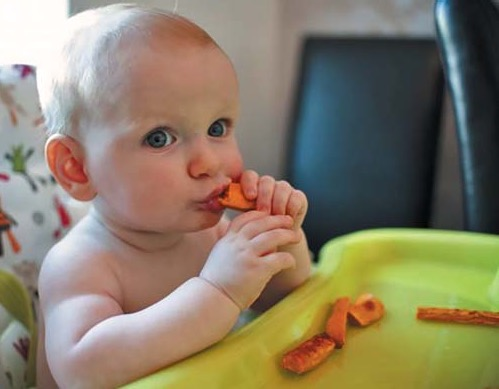
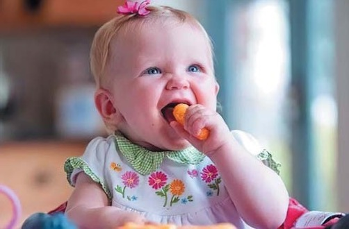
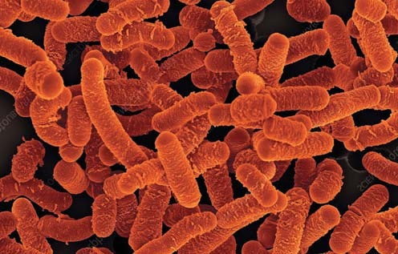

Профілактика · журнал «ДентАрт» 2025 №3
Жування у профілактиці стоматологічних захворювань
CHEWING IN THE PREVENTION OF DENTAL DISEASES
Сучасний стан стоматологічної захворюваності у всьому світі, і зокрема в Україні, свідчить про низьку ефективність профілактичних заходів. Зростає доцільність активного створення та впровадження персоніфікованих програм профілактики стоматологічних захворювань з урахуванням наявності факторів ризику виникнення та розвитку патологічних змін у щелепно-лицевій ділянці конкретної людини. Серед численних індивідуальних профілактичних заходів одне з перших місць посідає харчування, важливими складовими якого є не тільки склад, якість їжі, режим, таймінг харчування, а й сама функція жування. Стаття подає науково обґрунтовані критерії правильного жування, методи оцінки його якості, акцентує увагу на підходах до правильного формування та виконання функції жування, шляхах його покращення, ролі у цьому процесі жувальної гумки.
Ключові слова: жування, профілактика, стоматологічні захворювання, жувальна гумка.
Загальновідомо, що здоров'я ротової порожнини є запорукою здоров'я людини. Натепер поняття «здоров'я ротової порожнини» передбачає такий стан ротової порожнини, зубів і загалом щелепно-лицевої ділянки, який дозволяє людині виконувати низку основних функцій життєдіяльності (уживання їжі, дихання, мовлення) і характеризується численними психосоціальними проявами, що включають впевненість у собі, відчуття благополуччя, здатність спілкуватися, працювати, не відчуваючи болю, дискомфорту і незручності. Стан здоров'я ротової порожнини змінюється протягом життя, від дитинства до старості, і є невід'ємною складовою загального стану здоров'я і сприяє участі людини в житті суспільства та реалізації її потенціалу.
У той же час, за даними ВООЗ, до основних захворювань і патологічних станів ротової порожнини схильні близько 3,5 мільярда людей у всьому світі. У сукупності поширеність цих захворювань на планеті оцінюється на рівні 45%, що вище, ніж поширеність будь-якого іншого неінфекційного захворювання. Загальна кількість випадків захворювань ротової порожнини у світі приблизно на 1 мільярд перевищує кількість випадків п'яти основних неінфекційних захворювань, разом узятих (психічні розлади, серцево-судинні захворювання, цукровий діабет, хронічні респіраторні захворювання та рак). Найбільш значущими для громадського здоров'я є карієс, захворювання пародонта, повна втрата зубів (едентулізм), рак ротової порожнини, травми зубощелепної системи, нома і вроджені вади розвитку, такі як щілини губи і піднебіння, більшість з яких піддаються профілактиці.
Глобальний тягар захворювань і патологічних станів ротової порожнини – нагальна проблема громадського здоров'я світового масштабу, що має соціально-економічні та екологічні наслідки. Існує тісний і стійкий взаємозв'язок між соціально-економічним станом і поширеністю й тяжкістю захворювань ротової порожнини. Так, державні та приватні витрати на охорону здоров'я ротової порожнини сягають приблизно 387 млрд доларів США в усьому світі. Доведено, що затрати на лікування лише карієсу можуть становити 5–10% бюджету охорони здоров'я в розвинених країнах, включаючи відновлення зубів і хірургічні втручання. Важливо, що запально-дистрофічні ураження тканин пародонта мають тісний зв'язок із підвищеним ризиком серцево-судинних захворювань, інсульту, діабету, деменції та ускладнень при вагітності.
В Україні рівень стоматологічної захворюваності продовжує залишатися високим, а епідеміологічна ситуація постійно погіршується. Це зумовлено і пандемією ковіду, війною, психологічним і екологічним стресом, низьким рівнем фтору в більшості регіонів, соціально-економічними умовами, відсутністю якісної санітарної освіченості населення. Натепер стоматологічна допомога залишається найбільш масовою медичною допомогою, але доступ до профілактичної стоматологічної допомоги значно звужений, тоді як профілактичні заходи – дешевша, ефективніша і більш соціально справедлива альтернатива лікуванню. ВООЗ вже у 2022 році заклала стратегію на 2030 рік із фокусом на профілактичний підхід і низку глобальних цілей щодо скорочення захворювань ротової порожнини. У цьому аспекті різко зростає доцільність активного створення та впровадження персоніфікованих програм профілактики стоматологічних захворювань з урахуванням наявності факторів ризику виникнення та розвитку патологічних змін у щелепно-лицевій ділянці, і зокрема в ротовій порожнині конкретної людини.
Серед численних індивідуальних профілактичних заходів щодо стоматологічних захворювань одне з перших місць посідає харчування. Важливими складовими харчування є не тільки склад, якість їжі, режим, таймінг харчування, а й сама функція жування. На жаль, освіченість людей щодо правильного жування досить низька, а порушення цієї функції зумовлює ряд патологічних змін не тільки в щелепно-лицевій ділянці, а й в усьому організмі людини.
Основні науково обґрунтовані критерії правильного жування
Насамперед – тривалість та кількість жувальних рухів. Оптимально – 20–30 жувальних рухів на один шматок їжі, для більш твердих продуктів (м'ясо, горіхи, сирі овочі) – кількість рухів зростає. Жування 20–30 секунд активізує вироблення слини, яка містить ферменти для початкового розщеплення вуглеводів (амілаза) та сприяє кращому перетравлюванню їжі в шлунку. Достатнє подрібнення забезпечує змішування їжі зі слиною, що запускає процес ферментативного травлення. Триваліше жування зменшує ризик переїдання, бо мозку потрібно приблизно 20 хвилин, щоб отримати сигнал насичення. 25–40 жувань сповільнюють апетит та підвищують засвоюваність жирів.
Важливим є темп жування – жувати слід повільно і ритмічно. Швидке ковтання великих шматків призводить до перевантаження шлунка і поганого засвоєння поживних речовин. Повільне споживання їжі (не менше 20 хв на основний прийом) пов'язане не тільки з меншим ризиком переїдання, а й з нижчим індексом маси тіла, кращою чутливістю до інсуліну. В японських, середземноморських та скандинавських дієтах повільне харчування є частиною культури, що надзвичайно корисно. Метааналізи наукових досліджень свідчать, що повільне жування знижує енерговживання (ефект середнього рівня доказовості). Цікаві результати клінічних спостережень подали Iizuka і співавтори: учасники їли під акомпанемент метронома (40 bpm vs 80/160 bpm); м'який ритм (40 bpm) продовжував час їжі, збільшував кількість жувань та пауз між ними — прості способи уповільнити вживання їжі.
Слід рівномірно навантажувати обидва боки щелеп для запобігання однобічному стиранню зубів, перенавантаженню пародонта і порушенням прикусу.
Треба звертати увагу на положення тіла та голови. Їсти бажано сидячи прямо, не нахиляючи голову занадто низько. Це допомагає правильному ковтанню і запобігає потраплянню повітря у шлунок.
Актуальним правилом є концентрація на процесі вживання їжі. Свідоме жування без відволікань (наприклад, без смартфона або телевізора) покращує відчуття насичення та зменшує переїдання.
Правильне жування можливе лише за умови здорових зубів та ясен. Карієс, неправильний прикус, хвороби пародонта знижують ефективність механічної обробки їжі.
Важливо, що якість жування можна перевірити багатьма способами. Більшість із них доступні для самостійного виконання (домашні методи), і лікар-стоматолог також повинен оцінювати цю функцію у своїх пацієнтів.
Методи оцінки якості жування
Домашні тести базуються на суб'єктивних відчуттях (після ковтання не повинно бути відчуття «грудки» в горлі, дискомфорту від важкості їжі у шлунку); візуальній перевірці на серветці після звичайного жування шматка сирої моркви, яблука або горіха перед ковтанням рівномірності подрібнення шматочків; самоаналізі боків жування (обидва боки повинні працювати); визначенні тривалості жування одного шматка твердої їжі (менше ніж 10–15 секунд недостатньо для якісного подрібнення); використанні жувальної гумки без цукру (після жування гумки протягом кількох хвилин оцінюється в дзеркалі симетричність роботи м'язів обох щік, відсутність дисбалансу сторін).
Лікар-стоматолог може оцінити рівномірність зношування зубів, стан жувальних м'язів, роботу скронево-нижньощелепних суглобів, що опосередковано показує якість жування. Наявність патологічного стирання, патології прикусу, каріозних уражень, хвороб пародонта зумовлює ускладнення жування. В арсеналі стоматолога для перевірки жувальної функції є також тест жувальної ефективності зі стандартизованими продуктами та ряд функціональних методів обстеження жувальних м'язів, роботи скронево-нижньощелепних суглобів (СНЩС).
Чому важливе правильне формування та виконання функції жування?
Від часу появи та розвитку жувального рефлексу залежить формування щелепно-лицевої ділянки, і навіть мовна функція. За час появи і розвитку цього рефлексу несуть відповідальність батьки. Разом із введенням прикорму, починаючи з 6 місяців, запускається функція жування. У 2 роки дитина вже повинна самостійно їсти, пережовувати шматочки їжі з дорослого столу. Педіатри рекомендують замість силіконових гризунків давати малюкам тверді продукти, які сприяють розвитку жувального рефлексу, але з урахуванням наявності достатньої кількості зубів для пережовування. Здатність жувати залежить не лише від кількості зубів, а й від моторики рота та звички до твердої їжі. Пізнє введення шматочків до раціону дитини може стати причиною затримки її розвитку. Діти, яким до дворічного віку перетирають їжу, значно пізніше починають розмовляти, мають проблеми зі шлунком. Разом із введенням прикорму і шматочків їжі язик стає в правильне положення, розвиваються його м'язи, що сприяє розвитку мови.

Категорично не можна вмикати мультики або телевізор під час годування. Якщо малюк зосереджується на процесі поглинання їжі, тоді у нього краще координуються дії рук, язика і губ. Коли дитина під час уживання їжі дивиться в тарілку, а не на героїв мультфільму, у неї виробляється шлунковий сік, потрібний для нормального травлення, що профілактує захворювання шлунка. У процесі жування у дитини відбувається активний ріст жувальних м'язів, формується правильний розвиток щелеп і навіть постава. Несвоєчасний перехід дитини на тверду їжу зумовлює потребу лікуватися одночасно у дефектолога, гастроентеролога та ортодонта.

Повільне й усвідомлене жування у дорослому віці сприяє кращому насиченню і допомагає контролювати вагу, активує парасимпатичну нервову систему, що знижує стрес і поліпшує загальне самопочуття. PET дослідження Momose і співавторів засвідчило стимуляцію жуванням церебрального кровотоку, що може сприяти когнітивній активності, особливо в гіпокампі для формування пам'яті. Якісне пережовування механічно подрібнює їжу, полегшуючи роботу шлунка та кишківника. Добре подрібнена їжа краще змішується зі слиною, де містяться ферменти (амілаза і ліпаза), що починають процес розщеплення вуглеводів та жирів уже в роті, а також подрібнені шматочки збільшують площу контакту з травними ферментами, полегшуючи роботу шлунка та кишківника.
LIMARP (Міжнародний центр передового досвіду боротьби з ожирінням) у 2024 р. процитував дослідження Nishioka і співавторів з університету Дошиша (Японія): «Добре пережована їжа сприяє кращому поглинанню поживних речовин, а слина може знешкоджувати певні канцерогени». Якісно подрібнена їжа знижує потребу у шлунковій секреції, зменшує ризик гастритів. Фактично відбувається профілактика гастроентерологічних захворювань та розладів, оскільки менше навантаження на шлунок і дванадцятипалу кишку знижує ризик також і виразкової хвороби та диспепсії. Правильне тривале жування зменшує надмірне заковтування повітря, газоутворення й диспепсію, що допомагає уникати здуття та метеоризму. Збільшена тривалість жування підвищує також термогенез після їди, що може сприяти додатковому контролю ваги.
Рівномірне навантаження під час жування знижує ризик болю в СНЩС і сприяє вентиляції євстахієвої труби, запобігаючи середньому отиту. У дисертаційному дослідженні в Purdue University було показано, що позиція нижньої щелепи змінює геометрію зовнішнього слухового проходу – відкриття чи закриття щелепи, змінюючи об'єм каналу, впливає на рух сірки та акустичні властивості вуха. Під час жування виникає мікромасаж стінок слухового проходу, що сприяє природному виведенню сірки назовні через механічну стимуляцію епітеліального переносу та зміну форми слухового проходу.
Таким чином, якісне жування профілактує низку системних захворювань, патологічних станів загалом в організмі, які здатні викликати та потенціювати численні стоматологічні захворювання.
Збалансоване жувальне навантаження відіграє важливу роль у збереженні стоматологічного здоров'я безпосередньо, зумовлюючи цілий комплекс адаптивних процесів у щелепно-лицевій ділянці.
Жування твердої їжі сприяє природному очищенню зубів, допомагаючи механічно видаляти залишки їжі та зубний наліт, що зменшує ризик розвитку карієсу. Збільшення у цих умовах продукції слини сприяє як покращенню місцевого імунного захисту, так і зростанню ферментів, що нейтралізують кислоти, які є наслідком діяльності карієсогенних бактерій, додатково відбувається мінералізуючий вплив на емаль зубів.
Жувальне навантаження є своєрідною фізіологічною механічною стимуляцією пародонта, яка здійснює позитивний вплив на: альвеолярну кістку, періодонтальну зв'язку, цемент зуба; обмінні процеси у тканинах; кровообіг і лімфообіг; підтримку структури кістки (антиатрофічна дія).
Жувальний тиск викликає механотрансдукцію – процес, при якому клітини (фібробласти, остеобласти, остеоцити) сприймають механічні імпульси і трансформують їх у біохімічні сигнали, які: стимулюють остеогенез (формування кісткової тканини); інгібують резорбцію щелепних кісток (гальмують остеокласти); активують проліферацію клітин пародонта; покращують васкуляризацію тканин.
Жорстка їжа (яблука, морква, горіхи) активує адаптивні реакції пародонта. В умовах наявності захворювання пародонта збалансоване жування зменшує локальне запалення, діючи як протизапальний стимул (через кровообіг і дренаж тканин), поліпшує параметри індексу епітеліального прикріплення, сприяє відновленню товщини кістки, зменшенню патологічної рухомості зубів.
У сучасної людини у зв'язку з редукцією зубощелепної системи, за наявності великої кількості аномалій м'яких тканин, зубних рядів, патологій прикусу, зубів, тканин пародонта, самоочищення ротової порожнини значно ускладнене. Такий стан потенціюється і характером їжі, більша частина якої є надто м'якою, липкою, в'язкою. Так, наприклад, при вживанні навіть невеликої кількості цукру-піску його виявляють у ротовій рідині ще протягом 30 хвилин. Має значення кулінарна і технологічна обробка їжі: перемелювання м'яса, приготування соків, пюре, киселів, кремів. Це зменшує функціональне навантаження на жувальний апарат, створюються умови для швидкого росту мікробного зубного нальоту і формування біоплівки, що зумовлює місцеве зниження рН, демінералізацію і деградацію органічних сполук емалі зубів.
Можливі шляхи покращення жування
У щоденному раціоні повинно бути більше твердої їжі, такої як сирі овочі та фрукти, горіхи, менше карієсогенних продуктів.

Регулярними мають бути профілактичні огляди у стоматолога та сімейного лікаря, профілактичне лабораторне обстеження відповідно до віку.
Актуальною залишається механотерапія (система лікувальних та профілактичних вправ із використанням спеціальних пристроїв або ручних технік, які сприяють функціональній адаптації м'язів і суглобів, зокрема в щелепно-лицевій ділянці) у дітей, яка призначається стоматологом за конкретними показаннями і підбирається індивідуально. Наявні методики механотренування для м'язів щелепно-лицевої зони, зубів, ясен для дітей.
Додатковим фізіологічним стимулом, який активує частину механізмів, пов'язаних із жувальним навантаженням, хоча й не повністю замінює повноцінну жувальну функцію при харчуванні, є жувальна гумка. У цьому напрямку вибір має бути сконцентрований на безцукрових функціональних/медичних жувальних гумках. Найбільш оптимальним є призначення цього медичного засобу безпосередньо лікарем-стоматологом з лікувально-профілактичною метою.
Загалом для дітей раніше 5–6-річного віку гумки не рекомендовані. Склад функціональної жувальної гумки визначає вік, показання та протипоказання до її застосування. Але є ряд позитивних моментів застосування таких засобів. Так, жувальна гумка значно збільшує потік слини (у перші хвилини до 3–4 разів від вихідного рівня) і утримує підвищений рівень до 20–30 хвилин жування. Під дією слини зростає загалом pH ротової порожнини, що допомагає нейтралізувати кислотність після вживання їжі, яка впливає на стан емалі. Потік слини сприяє вимиванню залишків їжі, очищає зубний наліт, а також збагачує емаль кальцієм та фосфатами, стимулюючи ремінералізацію. Систематичний огляд BMC Oral Health (2023) підтверджує, що жування гумки значно збільшує безстимульований потік слини у літніх людей або осіб зі зниженою салівацією. Жування безцукрової гумки знижує рівень Streptococcus mutans, основного збудника карієсу, та перешкоджає продукуванню кислоти бактеріями. Рандомізовані дослідження демонструють, що жування гумки після вживання їжі зменшує відчуття голоду, бажання перекусити і знижує кількість перекусів до 10% порівняно з контролем.

Цікаво, що жування безцукрової функціональної гумки навіть короткочасно покращує увагу, настрій, реакцію і когнітивну продуктивність протягом 15–20 хвилин; пояснюють цим «механічне збудження» (mastication induced arousal). Жування може знижувати тривожність, підвищувати стресоздатність та сприяти більшій когнітивній стійкості під навантаженнями. Жування гумки після хірургічних втручань на черевній порожнині («sham feeding») стимулює активність кишківника, скорочує тривалість післяопераційної ілеусної паузи – пацієнти швидше відновлюють газообмін і випорожнення.
У нашій клінічній практиці частою рекомендацією пацієнтам після професійної гігієни, особливо у пацієнтів із захворюванням пародонта, є застосування у вигляді місячного курсу жувальної гумки ProbioGUM з пробіотичним бактеріальним штамом. Це зумовлено вмістом у ній бактеріальної культури Lactobacillus salivarius SGL 03 – 3 x 10⁹ КУО(KBE). Відомі наукові експериментально-клінічні докази ефективності застосування як допоміжного засобу у профілактиці та лікуванні хвороб пародонта саме пробіотичного штаму Lactobacillus salivarius SGL03. Він синтезує два антибактеріальні бактеріоцини (саліваріцин А та саліваріцин В), які пригнічують ріст патогенних мікроорганізмів, у тому числі пародонтогенні збудники червоного комплексу. Загалом доведені антибактеріальні, імуномодулюючі та протизапальні властивості засобів із Lactobacillus salivarius SGL03, що дозволяє профілактувати утворення біоплівки, розвиток карієсогенного процесу та відіграє важливу роль у підтримці здорової мікрофлори ротової порожнини.
Але важливо пам'ятати, що є чіткі правила застосування жувальної гумки, а саме: починати жувати гумку не пізніше, ніж через 5 хвилин після їди; жувати не довше 15–20 хвилин для максимального слиновиділення, нейтралізації кислотності та профілактики карієсу; з урахуванням стану СНЩС не перевищувати 1 годину на день, краще кілька коротких сеансів (до 20 хв) із паузами й м'язовим відпочинком; жування повинно бути на обидва боки щелеп; не жувати надмірно, відпочивати при дискомфорті; обов'язково враховувати індивідуальну чутливість пацієнта до компонентів жувальної гумки.
Висновки
Збалансоване якісне жування надзвичайно важливе для збереження здоров'я ротової порожнини, персоніфікованої первинної профілактики каріозного ураження зубів, тканин пародонта, формування зубощелепного апарату, стимуляції системи слиновиділення, а також профілактики гастроентерологічних, ендокринологічних захворювань, стресових станів, порушень церебрального кровотоку, ЛОР-патології. Нормалізація жувальної функції є пріоритетною у вторинній профілактиці майже всіх стоматологічних захворювань.
Література
- Global oral health status report: towards universal health coverage for oral health by 2030. Geneva: World Health Organization; 2022. Licence: CC BY-NC-SA 3.0 IGO.
- World Health Organization. Oral health (2022).
- Tracking progress on the implementation of the Global oral health action plan 2023–2030: baseline report 28 January 2025.
- Iizuka T., Koshimizu H., Tanaka M. (2025). Using musical tempo to influence eating behavior: Effects of 40 vs 80 bpm on bite timing and chewing. Nutrients,17(1),115.
- Miquel Kergoat S. M., Azais Braesco V., Burton Freeman B., Hetherington M. M. (2015). Effects of chewing on appetite, food intake and gut hormones: A systematic review and meta analysis. Physiology & Behavior.; 125: 253–269.
- Momose T., Nishikawa J., Watanabe T. et al. (1997). Effect of mastication on regional cerebral blood flow in humans examined by positron-emission tomography with 15O-labelled water and magnetic resonance imaging. Arch Oral Biol Jan;42(1):57-61.
- Sta Maria M. T., Hasegawa Y., Khaing A. M. M. et al. (2023). The relationships between mastication and cognitive function: A systematic review and meta-analysis. Jpn Dent Sci Rev. Dec;59:375-388.
- Sugiura T. et al. (2021). Reduced mastication causes decreased memory function and hippocampal neurogenesis in aged mice. Scientific Reports, 15898.
- Nishioka H., Nishi K., Kyokane K. (1981). Human saliva inactivates mutagenicity of carcinogens. Mutat Res. 5: 323-33.
- Hamada Y., Hayashi N. (2021). Chewing increases post-prandial diet induced thermogenesis. Sci Rep. Dec 9;11(1):23714.
- Gilliom N. A. The effects of jaw motion on the ear canal. Purdue University dissertation.
- Kawasaki K. et al. (2021). The relationship between masticatory function and systemic health. Journal of Oral Rehabilitation, 48(9), 1010–1018.
- Ko Y. et al. (2020). Chewing induces osteogenesis in the alveolar bone through mechanotransduction. Journal of Dental Research, 99(2), 193–200.
- Dodds M. W. J. et al. (2023). The effect of gum chewing on xerostomia and salivary flow rate in elderly and medically compromised subjects: systematic review and meta analysis. BMC Oral Health. 2023;23:406.
- Yeung Clara Yan-Yu, Chu C-H, Yu OY (2023). A concise review of chewing gum as an anti-cariogenic agent. Front. Oral. Health 4:1213523.
- Hetherington M. M. et al. (2025). Effects of Chewing Gum on Satiety, Appetite Regulation, Energy Intake and Weight Loss: Systematic Review. Nutrients. 2025;17(3):435.
- Jonah Lehrer (2011). The Cognitive Benefits Of Chewing Gum. Science Nov 29.
- Roxane Anthea Francesca Weijenberg, Frank Lobbezoo (2015). Chew the Pain Away: Oral Habits to Cope with Pain and Stress and to Stimulate Cognition. Biomed Res Int May 18;2015:149431.
- Fitzgerald J. E., Ahmed I. (2009). Systematic review and meta-analysis of chewing-gum therapy in the reduction of postoperative paralytic ileus following gastrointestinal surgery. World Journal of Surgery; 33(12): 2557–2566.
- Baginska J., Zapala B., Dorocka-Bobkowska B. (2021). Effects of the probiotic Lactobacillus salivarius SGL03 on periodontal parameters and the oral microbiome in patients with periodontitis. European Journal of Clinical Microbiology & Infectious Diseases, 40(3), 565–573.
- Petrushanko T. O., Loban G. A., Moshel T. M., Hancho O. V. (2020). Therapeutic potential of lactobacilli-based drug in the treatment of generalized periodontitis. Світ медицини та біології. № 4 (74). С. 121-125.
- Punamalli Symon Prasanth, RVS Krishna Kumar, Gomasani Srinivasulu, Kamineni Mounika (2023). Probiotics – a new era in eradication of dental caries. International Journal of Research and Review. 10(11): 200–203.